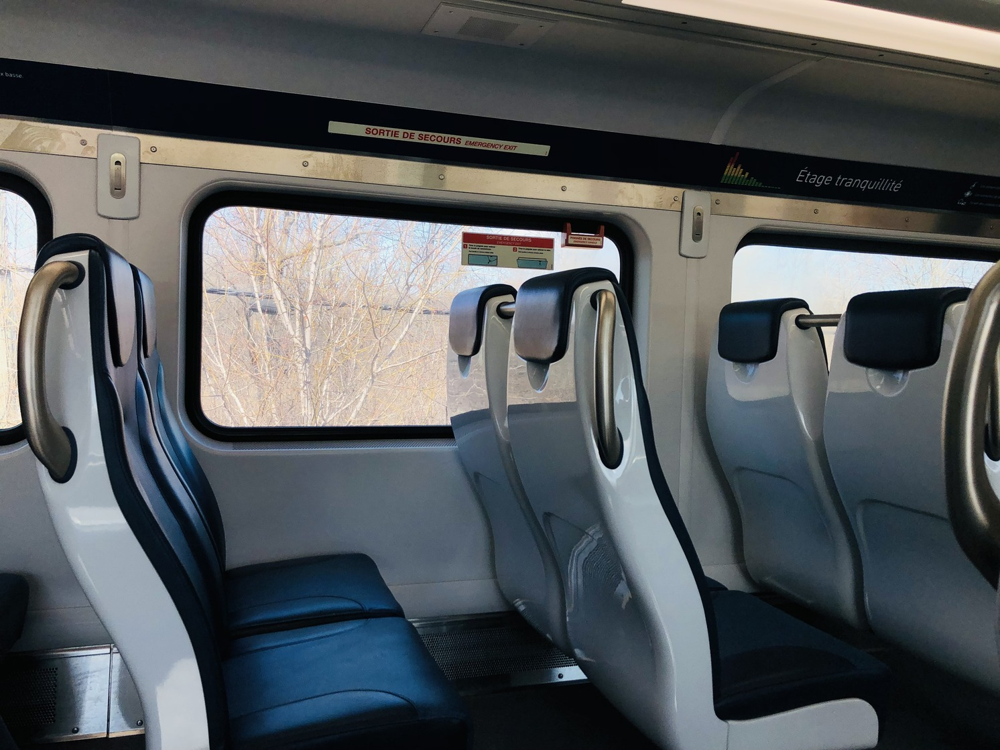

PUBLIC TRANSIT
Commuter Rail

Montreal's EXO commuter rails were created in 1996. Though they have had their issues in the past, they are a great way to reduce carbon emissions when dealing with North-American car-centric infrastructure. These trains used to reach much farther places a couple decades ago. The problem is, freight trains, whose companies own the tracks, would more often than not get the right of way. As freight trains can get ridiculously long, they caused significant delays. This is why many railways closed. For example, The Montreal and Southern Counties Railway, to Granby, was the first to close in 1956. The CN line to Vaudreuil and the New York Central Railway to Valleyfield were the second and third in 1961. Nowadays, the EXO train system has 5 lines:
- Central Station to Mont-Saint-Hilaire,
- Central Station to Mascouche,
- Lucien L'allier Station to Candiac,
- Lucien L'allier Station to Saint-Jérôme,
- and Lucien L'allier Station to Vaudreuil-Hudson.
There used to be 6 lines, but the Central Station to Deux-Montagnes line is currently being replaced by the REM.
REM
.jpg)
As previously mentioned, the REM, or the Resau Express Metropolitain, is still in construction. Commuters are only able to go from Brossard to Central Station. However, the next batch stations are said to be operational by October 2025. The REM is meant to replace the older and slower commuter trains. The ARTM, or the Metropolitan Regional Transportation Authority, also wants to expand the train's reach. The plan is to replace the Deux-Montagnes branch and part of the Vaudreuil-Hudson branch. They also want to connect the Pierre Elliott Trudeau airport to the REM system.